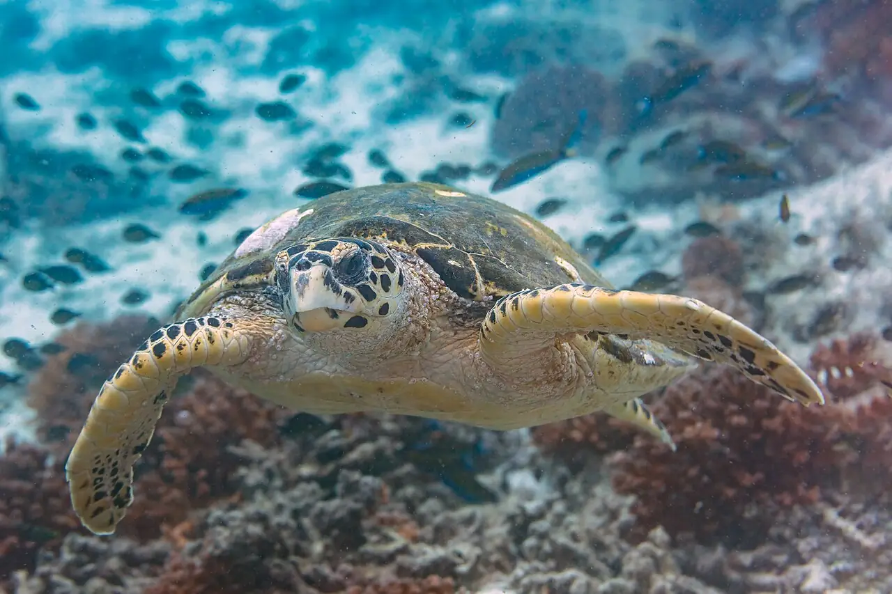

Îles Daymaniyat
Mascate, Oman · plongée, snorkeling

Archipel de neuf îlots protégé en réserve naturelle, à une vingtaine de kilomètres au large de la côte, au nord-ouest de Mascate. Ses récifs abritent tortues, raies et, en saison, requins-baleines.
- Lieu
- Mascate, Oman
- Niveau
- Variable selon les conditions
- Activités
- plongée, snorkeling
- Type d'eau
- Mer / océan
- Coordonnées
- 23.85, 58.07 (position approximative du secteur)
Dangers à connaître
- Courant et vent en pleine mer : sortie en bateau obligatoire.
- Chaleur intense en été.
Le conseil d'Ocean Buddy
Pars uniquement avec un opérateur agréé : le débarquement sur les îles est interdit une partie de l’année pour protéger la nidification.
Ouvrir dans Ocean Buddy Télécharger sur l'App Store
Source : Fiche Ocean Buddy · septembre 2026 · à vérifier localement.